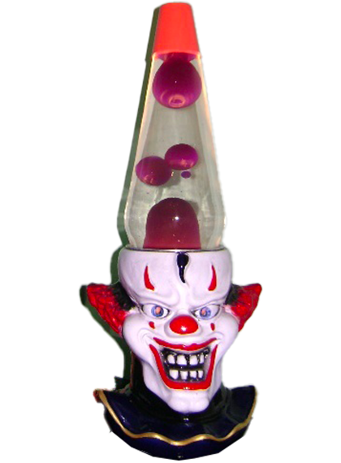

Povero Bobo, fece una brutta fine… Stava guidando l’auto del duca di Vantre, un ispano-suise, quando le sue cadenti emorroidi uscirono dall’auto e si incastrarono alla ruota posteriore…venne completamente sventrato, lasciando una conchiglia vuota seduta sulla tappezzeria

come una pelle d’orso… Anche gli occhi e il cervello se ne andarono, con un orribile gorgogliante rumore di interiora… Il duca dice che si porterà dietro quell’orribilie gorgoglìo fino alla tomba…" William S. Burroughs, "Pasto Nudo" 1959.